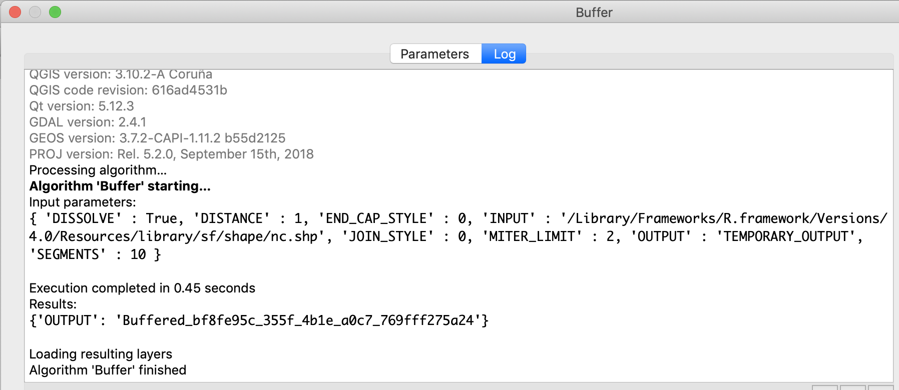

The goal of qgisprocess is to provide an R interface to the popular and open source desktop geographic information system (GIS) program QGIS. The package is a re-implementation of functionality provided by the archived RQGIS package, which was partially revived in the RQGIS3 package.
Installation
You can install the development version from GitHub with:
# install.packages("remotes")
remotes::install_github("r-spatial/qgisprocess")The qgisprocess package wraps the qgis_process command-line utility, which is available in QGIS >= 3.14.16, released in September 2020. MacOS users will have to install QIGS >= 3.16; download instructions for all platforms are available at https://download.qgis.org/. If a recent version of QGIS isn’t available for your OS, you can use one of the Geocomputation with R Docker images with QGIS installed.
If the automatic configuration fails (or if you have more than one installation and would like to choose which one is used by qgisprocess), you can set options(qgisprocess.path = "path/to/qgis_process"), possibly in your .Rprofile to persist between sessions. You can run qgis_configure() to print the gritty details!
library(qgisprocess)
#> Using 'qgis_process' at '/Applications/QGIS.app/Contents/MacOS/bin/qgis_process'.
#> Run `qgis_configure()` for details.
qgis_configure()
#> getOption('qgisprocess.path') was not found.
#> Sys.getenv('R_QGISPROCESS_PATH') was not found.
#> Trying 'qgis_process' on PATH
#> Error in rethrow_call(c_processx_exec, command, c(command, args), stdin, : cannot start processx process 'qgis_process' (system error 2, No such file or directory) @unix/processx.c:604 (processx_exec)
#> Found 1 QGIS installation containing 'qgis_process':
#> /Applications/QGIS.app/Contents/MacOS/bin/qgis_process
#> Trying command '/Applications/QGIS.app/Contents/MacOS/bin/qgis_process'
#> Success!Example
The following example demonstrates the buffer algorithm in action. The passing of sf and raster objects is experimentally supported (and will be well-supported in the future!).
input <- sf::read_sf(system.file("shape/nc.shp", package = "sf"))
result <- qgis_run_algorithm(
"native:buffer",
INPUT = input,
DISTANCE = 1,
DISSOLVE = TRUE,
.quiet = TRUE
)
#> Argument `SEGMENTS` is unspecified (using QGIS default value).
#> Using `END_CAP_STYLE = "Round"`
#> Using `JOIN_STYLE = "Round"`
#> Argument `MITER_LIMIT` is unspecified (using QGIS default value).
#> Using `OUTPUT = qgis_tmp_vector()`
result
#> <Result of `qgis_run_algorithm("native:buffer", ...)`>
#> List of 1
#> $ OUTPUT: 'qgis_outputVector' chr "/var/folders/bq/2rcjstv90nx1_wrt8d3gqw6m0000gn/T//RtmptXCayy/file9b2b462efaa9/file9b2b5212f730.gpkg"
output_sf <- sf::read_sf(qgis_output(result, "OUTPUT"))
plot(sf::st_geometry(output_sf))
You can read the help associated with an algorithm using qgis_show_help():
qgis_show_help("native:buffer")
#> Buffer (native:buffer)
#>
#> ----------------
#> Description
#> ----------------
#> This algorithm computes a buffer area for all the features in an input layer, using a fixed or dynamic distance.
#>
#> The segments parameter controls the number of line segments to use to approximate a quarter circle when creating rounded offsets.
#>
#> The end cap style parameter controls how line endings are handled in the buffer.
#>
#> The join style parameter specifies whether round, miter or beveled joins should be used when offsetting corners in a line.
#>
#> The miter limit parameter is only applicable for miter join styles, and controls the maximum distance from the offset curve to use when creating a mitered join.
#>
#> ----------------
#> Arguments
#> ----------------
#>
#> INPUT: Input layer
#> Argument type: source
#> Acceptable values:
#> - Path to a vector layer
#> DISTANCE: Distance
#> Argument type: distance
#> Acceptable values:
#> - A numeric value
#> SEGMENTS: Segments
#> The segments parameter controls the number of line segments to use to approximate a quarter circle when creating rounded offsets.
#> Argument type: number
#> Acceptable values:
#> - A numeric value
#> END_CAP_STYLE: End cap style
#> Argument type: enum
#> Available values:
#> - 0: Round
#> - 1: Flat
#> - 2: Square
#> Acceptable values:
#> - Number of selected option, e.g. '1'
#> - Comma separated list of options, e.g. '1,3'
#> JOIN_STYLE: Join style
#> Argument type: enum
#> Available values:
#> - 0: Round
#> - 1: Miter
#> - 2: Bevel
#> Acceptable values:
#> - Number of selected option, e.g. '1'
#> - Comma separated list of options, e.g. '1,3'
#> MITER_LIMIT: Miter limit
#> Argument type: number
#> Acceptable values:
#> - A numeric value
#> DISSOLVE: Dissolve result
#> Argument type: boolean
#> Acceptable values:
#> - 1 for true/yes
#> - 0 for false/no
#> OUTPUT: Buffered
#> Argument type: sink
#> Acceptable values:
#> - Path for new vector layer
#>
#> ----------------
#> Outputs
#> ----------------
#>
#> OUTPUT: <outputVector>
#> BufferedIt may also be useful to run an algorithm in the QGIS GUI and examine the console ‘Input parameters’ to determine how the various input values are translated to string processing arguments:

A list of available algorithms can be found using qgis_algorithms(). When using R interactively, it may be useful to use View(qgis_algorithms()) to search.
qgis_algorithms()
#> # A tibble: 986 x 5
#> provider provider_title algorithm algorithm_id algorithm_title
#> <chr> <chr> <chr> <chr> <chr>
#> 1 3d QGIS (3D) 3d:tessellate tessellate Tessellate
#> 2 gdal GDAL gdal:aspect aspect Aspect
#> 3 gdal GDAL gdal:assignproje… assignprojecti… Assign projection
#> 4 gdal GDAL gdal:buffervecto… buffervectors Buffer vectors
#> 5 gdal GDAL gdal:buildvirtua… buildvirtualra… Build virtual rast…
#> 6 gdal GDAL gdal:buildvirtua… buildvirtualve… Build virtual vect…
#> 7 gdal GDAL gdal:cliprasterb… cliprasterbyex… Clip raster by ext…
#> 8 gdal GDAL gdal:cliprasterb… cliprasterbyma… Clip raster by mas…
#> 9 gdal GDAL gdal:clipvectorb… clipvectorbyex… Clip vector by ext…
#> 10 gdal GDAL gdal:clipvectorb… clipvectorbypo… Clip vector by mas…
#> # … with 976 more rowsFurther reading
- A paper on the original RQGIS package published in the R Journal
- A discussion options for running QGIS from R that led to this package
- The pull request in the QGIS repo that led to the development of the
qgis_processcommand-line utility